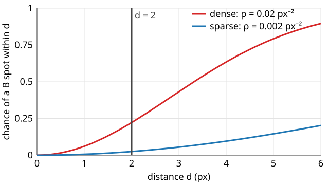

Objects instead of pixels: overlap, distances and the chance level
Image analysis
About this lecture
Pixel coefficients put all structures of a cell into one number. Today we ask per object: does this spot of A have a partner in B, and how far away is it?
From spots to objects: detect, locate, label.
Overlap measures: by any pixel, by more than half, by the centroid.
Distances between channels: nearest neighbour and one-to-one pairs.
The chance level: with many B spots, every A spot has a neighbour by chance.
Randomisation inside the cells and the cross-K function.
Below the resolution: centroids measure distances that pixels cannot, with a bias.
Slides titled The math give the formulas and proofs; the ideas are complete without them.
Why objects?
Pearson’s r and M1/M2 answer “how much of the signal overlaps”, for the whole region at once.
They cannot say which structures overlap: 60 % of the spots perfectly paired and 40 % alone give the same r as all spots half overlapping.
They cannot say how far apart two structures are: within one blurred spot, every distance looks the same.
They weight by intensity: one bright aggregate can dominate.
Object-based colocalisation segments both channels and counts objects: the share of A objects with a B partner, and the distance to it. Every number then inherits the detection errors (missed and false spots).
Recall: from spots to objects
Small spots (vesicles, single molecules): filter with a Laplacian of Gaussian of about the spot size, keep the local maxima above a noise threshold (the edges day: scale space and blobs), and locate each spot by its intensity-weighted centroid, to a fraction of a pixel.
Larger objects (compartments): threshold and label: one label per connected blob (labelling).
Detection is the subject of a planned point-detection elective; here it is a tool. Demo: 37 of 40 A spots found at 500 photons, all 40 at 80 photons but only 32 of 40 B spots.
Overlap or centroid?
For larger objects, “A has a partner in B” has several definitions (recall parents and children on the measurements day):
Any overlap: at least one pixel of the A object is in a B object.
Majority overlap: more than 50 % of its pixels are.
Centroid in B: its centre lies in a B object.
For small spots they agree. For large objects they do not:
Large A objects (radius 6 px) next to smaller B objects (radius 4 px, 5 px away): any overlap 79 %, majority 0 %, centroid 0 %.
Swap the sizes (small A inside large B): all three give 79 %.
State the definition; it is part of the result.
Distances between channels
For small spots, measure distances: for every A spot, the distance to the nearest B spot.
The histogram of these distances shows whether B spots sit near A spots more often than elsewhere.
“Colocalised” = nearest B within d_\text{max} (a few hundred nm, about the resolution).
Nearest neighbour: one B spot may serve many A spots. One-to-one: each B spot is used at most once (recall matching objects on the evaluation day): count the pairs, not the neighbours.
Demo, pairs at 0 nm with extra B spots: 65 % of the detected A spots have a B spot within 130 nm (the true share of paired spots is 60 %; a few unpaired ones find a neighbour by chance).
The chance level
With many B spots, every A spot has a B spot nearby, related or not.

For B spots placed at random with density \rho_B, the chance that one lies within d of a given point is 1 - e^{-\rho_B\pi d^2}.
At d = 2 px: 2.5 % for \rho_B = 0.002 px⁻² (12 spots in a 6000-pixel cell), 22 % for \rho_B = 0.02 px⁻² (120 spots).
Report the observed fraction next to the chance fraction, or the corrected (f_\text{obs} - f_\text{chance})/(1 - f_\text{chance}): 30 % observed is 28 % above chance in the sparse case, 10 % in the dense one.
The math: the chance level
Model the B spots as a Poisson process of density \rho_B: the number in a region of area a is Poisson with mean \rho_B a, independently for disjoint regions.
No B spot within d of a point: the disc of area \pi d^2 is empty, probability e^{-\rho_B\pi d^2}.
So the nearest-B distance D has P(D \le d) = 1 - e^{-\rho_B\pi d^2} and density 2\pi\rho_B\,d\,e^{-\rho_B\pi d^2} (the Poisson nearest-neighbour law of the relations unit, now from A to B), with mean 1/(2\sqrt{\rho_B}).
The formula ignores edges: near the cell border the disc sticks out of the cell, where no B spot can be, and the true chance is lower. Simulating random B positions inside the actual cell mask avoids this (next slides).
One-to-one pairing is a linear assignment problem: maximise the number of pairs within d_\text{max}, then minimise the total distance (the Hungarian algorithm of the evaluation day).
Try it: distances and chance
Randomisation for objects
The formula assumes B spots could be anywhere. In a cell they cannot: they live inside the cells, maybe only in the cytoplasm.
Move the B spots to random positions inside the cell mask (not the whole image), keep the A spots, recompute the statistic.
Repeat, say 39 times: an envelope of what unrelated spots give.
Random positions over the whole image would put many B spots outside the cells, far from every A spot: the chance level would look too low and everything would look “attracted”.
Cross-K / L function (Ripley): count the B spots within radius r of each A spot, for everyr at once, and compare with the envelope. Above the envelope: attraction at that scale; below: exclusion; inside: nothing to see.
The math: the cross-K function
With n_A and n_B spots in a region of area |W| and distances d_{ij}:
For B independent of A (a Poisson process of density \rho_B = n_B/|W|), the expected number of B spots within r of an A spot is \rho_B\pi r^2, so E[\hat K_{AB}(r)] \approx \pi r^2.
L(r) = \sqrt{K(r)/\pi} turns this into L(r) = r; plot L(r) - r: 0 for independence, > 0 attraction, < 0 exclusion.
Without edge correction \hat K is biased low near the border; the envelope from relocations in the same mask has the same bias, so the comparison stays fair.
Try it: cross-L
Below the resolution
Two spots 60 nm apart in two colours blur into one diffraction spot (FWHM ≈ 180 nm): pixel coefficients call them colocalised, exactly as they would at 0 nm.
Their centroids are still 60 nm apart. With enough photons and registered channels, that distance can be measured.
The price: every centroid has an error, the localisation precision (about the PSF width divided by \sqrt{\text{photons}}, plus background; owned by the point-detection elective).
Errors add up in the distance, and a distance cannot be negative: measured distances are biased upward. True 0 nm with 20 nm precision per channel reads about 35 nm on average.
Demo, pairs at 60 nm, 2000 photons: pixel r = 0.86 (“colocalised”), centroids 64 nm on average.
Below about 10 nm, FRET (the next day of this group) takes over.
The math: the distance bias
Let the true separation vector be \mathbf d, and the two centroids have independent Gaussian errors with sd \sigma_A, \sigma_B per axis. The measured vector is \mathbf d + \boldsymbol\varepsilon with \boldsymbol\varepsilon Gaussian of variance s^2 = \sigma_A^2 + \sigma_B^2 per axis:
E\big[|\mathbf d + \boldsymbol\varepsilon|^2\big] = d^2 + 2(\sigma_A^2 + \sigma_B^2).
For d = 0, |\boldsymbol\varepsilon| is Rayleigh-distributed with mean s\sqrt{\pi/2}: \sigma_A = \sigma_B = 20 nm gives 28.3 \times 1.253 = 35.4 nm.
For d > 0 the measured distance is Rice-distributed; its mean tends to d when d \gg s (60 nm with 20 nm precision: mean 67 nm).
So report distances with their precision, and compare with the distance measured on a sample known to be at 0 (two-colour beads, unit 4).
Try it: below the resolution
Summary
Objects answer which structures overlap and how far apart they are; they inherit the detection errors.
For large objects, any overlap, majority overlap and centroid-in give different answers: state the definition.
Nearest-neighbour distances between channels, counted within d_\text{max}, nearest neighbour or one-to-one.
Always next to the chance level: 1 - e^{-\rho_B\pi d^2} for random B spots (2.5 % sparse, 22 % dense at 2 px), or better, an envelope from relocations inside the cells; the cross-L function does it at every distance at once.
Centroids measure distances below the resolution, with an upward bias from the localisation precision (0 nm reads ≈ 35 nm at 20 nm precision).